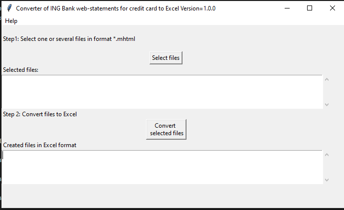
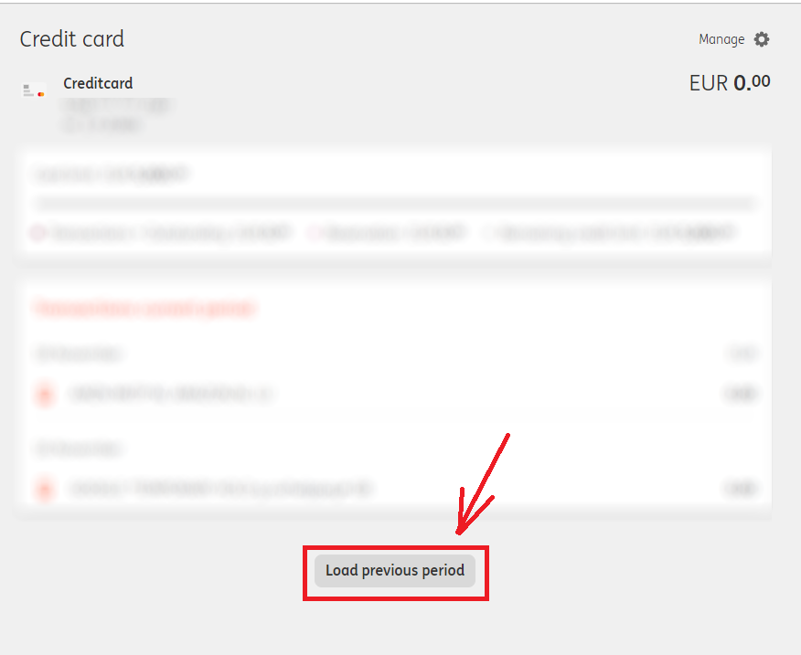
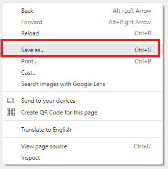
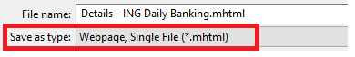

Simple tool to create an Excel extract with the credit card transactions of the ING Bank (Netherlands).
For whatever reason ING Bank does not support any downloadable statements on the credit card transactions. Not even in PDF format, not to mention the CSV or Excel formats. This is despite the fact, that the functionality if definitely needed and has been requested from the ING Bank several times (e.g. see facebook and klacht.nl)
The IngBank2Excel (later in the text also referred to as the tool) works around this limitation and allows to create an Excel or CSV file with all credit card transactions, available through the web interface of the ING bank.

Developer: ev2geny at gmail.com
IngBank2ExcelGUI.bat
Step 1.1 Login to the ING web with Google Chrome.
Step 1.2 Navigate to the credit cards section.
Result: The current period will be shown.
Step 1.3 If needed, click on the Load previous period at the bottom.

Result: The previous period will be loaded as well.
Step 1.4 Repeat previous step to load as many prior periods as needed.
Step 1.5 After all needed previous periods are loaded, right click anywhere on the web page and select Save as...

Step 1.6 Chose to save as a Webpage, Single File (.mhtml).

Step 1.7 Give the file a meaningful name and save it.
Result: A file with the extension .mhtml will be created.
Step 2.1 Double click the
IngBank2ExcelGUI.bat
Step 2.2 On the GUI interface press the Select button and select one or several .mhtml files, created in the Step 1.
Step 2.3 Press Convert Selected Files
Result: .xlsx file(s) will be created
See also Appendix A. Using the tool from the command line
In theory the tool can also be used on the macOS and Linux, but at the moment regular releases do not contain executable file for these OSs. One can either create such executables for these OSs or run the tool on these OSs directly from Python.
Antivirus programs attempt to detect viruses based on the algorithms, known only to them. Very often an antivirus would block anything unknown and/or suspicious. At the same time most of antivirus manufactures allow a suspicious file to be sent to them for more detailed investigation, after successful completion of which they would white list the suspicious file in the next virus definitions update. As an example files for the Microsoft Defender need to be sent here, files for the Symantec here. The developer normally \"agrees\" the tool with at least Microsoft Windows Defender.
So, if your antivirus does not like the IngBank2Excel there are 2 options:
For issues reporting and/or enhancement requests is best to use the github issues functionality
For general subjects start a discussion here
In any case you can always email the developer: ev2geny at gmail.com
To use the tool from the command line one has to use IngBank2Excel.py
usage: IngBank2Excel.py [-h] [-o OUTPUT_EXCEL_FILE_NAME] [-f {ING_CREDIT}] [-t {xlsx,csv}] input_file_name
Converting ING bank extracts to Excel
positional arguments:
input_file_name Input file name for conversion
options:
-h, --help show this help message and exit
-o OUTPUT_EXCEL_FILE_NAME, --output OUTPUT_EXCEL_FILE_NAME
Output file name (without extension), which will be created in excel or CSV format
-f {ING_CREDIT}, --format {ING_CREDIT}
Format of input file. If not provided, determined automatically
-t {xlsx,csv}, --type {xlsx,csv}
Format of the output file to be created
At the moment regular releases do not contain executable IngBank2Excel file for command line usage. One can either create such executable or run the tool directly from Python.